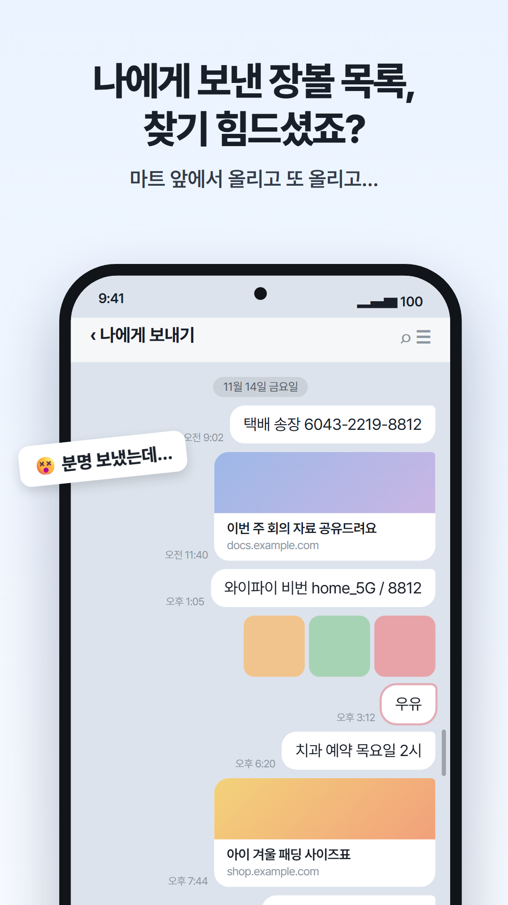
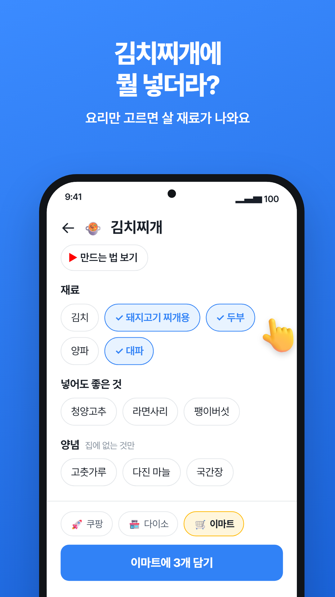
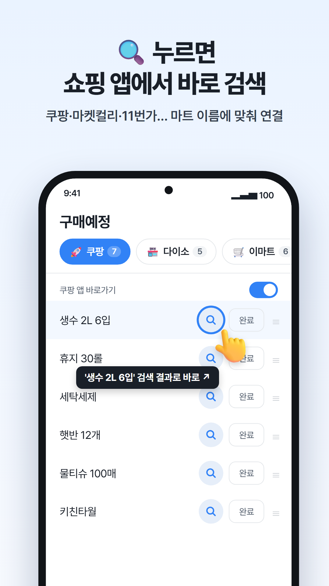
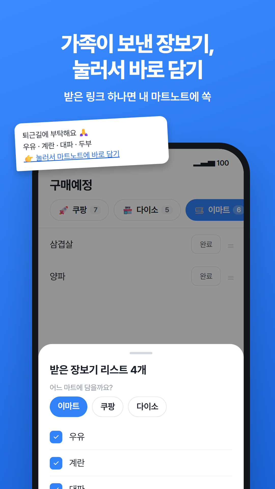

마트노트 1.7.0 출시 자료
버전 1.7.0 (versionCode 16) · 패키지 com.rldjrgo.grocerynote · 기본 언어 한국어
올리는 순서
- Play 콘솔 → 마트노트 → 설정 → 앱 서명에서 "업로드 키 인증서" SHA-1이 아래 지문과 같은지 확인
- 프로덕션(또는 테스트 트랙) → 새 버전 만들기 → AAB 업로드:
5_업로드파일/martnote-1.7.0-vc16.aab - 출시명:
16 (1.7.0)(AAB를 올리면 자동으로 채워짐 — 그대로 두면 됨) - 출시 노트 칸에 아래 출시 노트 복사해서 붙여넣기
- 스토어 등록정보 → 자세한 설명만 아래 것으로 바꾸기 (3번 항목이 "준비 목록"으로 바뀜). 앱 이름·짧은 설명은 그대로
- 스크린샷·그래픽 이미지·아이콘은 그대로 두기 (4번째 스크린샷이 예전 탭 이름이지만 기능은 같아서 이번엔 안 바꿈)
- 데이터 보안은 바꿀 것 없음 — 1.7.0에서 새로 모으는 정보가 없어요
- 저장 → 검토 제출
| 서명 지문 SHA-1 | 32:EF:85:73:9C:92:84:E7:0A:30:F7:27:18:9F:31:46:D4:6E:43:F5 |
| 이번 버전 (1.7.0) | ① "요리별 재료" 탭 → "준비 목록": 요리 말고도 명절·나들이/여행·아이/학교·아플 때·생활 목록 (새 목록 21개) ② 장보기 알림: 하루 많아야 한두 번(오래 못 산 것·쿠팡/컬리 저녁 주문·명절 일주일 전), 설정 > 알림에서 끄기/시간 변경 ③ 별점 창이 안 뜨던 문제 수정 |
| 알림 권한 | Android 13 이상은 알림 권한을 앱이 직접 물어요(온보딩 마지막 장). Play 콘솔에 따로 신고할 건 없어요. 정확한 시각 알람 권한은 안 써요. |
| 데이터 보안 | 1.6.0 때 넣은 "인앱 검색 기록(분석)" 그대로. 새로 고칠 것 없음. |
| 알아둘 것 | "카톡/카카오톡", "유튜브" 같은 다른 회사 이름은 문구·이미지 어디에도 쓰지 않았어요(타사 상표). |
| 링크 페이지 | https://mkkim0422.github.io/mart/l/ (GitHub Pages, gh-pages 브랜치) — 공유 링크가 이 페이지로 와요. 저장소 설정의 Pages를 끄면 링크가 안 열려요. |
문구
출시 노트 (이번 업데이트 내용)
📋 '요리별 재료'가 '준비 목록'이 됐어요 요리 말고도 골라 담을 수 있어요. 캠핑·물놀이, 출산 준비물, 초등 입학, 아이 열날 때, 생필품, 장마·겨울 준비까지. 위쪽 칸(요리·명절·나들이·아이·아플 때·생활)을 눌러 찾아보세요. 🔔 장보기 알림 적어 둔 걸 며칠째 못 샀을 때, 쿠팡·컬리 주문하기 좋은 저녁, 명절 일주일 전에 알려 드려요. 하루에 많아야 한두 번이고, 설정 > 알림에서 시간을 바꾸거나 끌 수 있어요.
앱 이름
장보기 메모 - 마트노트: 마트별 쇼핑 리스트 위젯
짧은 설명
나에게 보내기에 묻히던 장보기 메모를 마트별 장보기 목록·쇼핑 리스트로. 위젯에서 바로 체크, 요리만 고르면 살 재료까지.
자세한 설명
🛒 나에게 보내기로 장보기 보내뒀다가, 다른 글에 묻혀서 못 찾은 적 있죠? "우유, 계란, 휴지…" 적어두고 마트에 갔는데 링크, 사진, 다른 메모 사이에서 한참 스크롤하고 계셨다면, 마트노트를 써 보세요. 장보기만 따로, 홈 화면 위젯에 늘 보여요. 쿠팡에서 살 것, 다이소에서 살 것, 이마트에서 살 것… 한 리스트에 다 적으면 마트에서 헷갈리시죠? 마트노트는 마트별로 리스트를 따로 만들어요. 탭 하나로 마트를 바꾸고, 그 마트에서 살 것만 깔끔하게 봅니다. ━━━━━━━━━━━━━━━ 📋 뭘 사야 하더라? 고르기만 하세요 NEW ━━━━━━━━━━━━━━━ "김치찌개에 뭘 넣더라?" "캠핑 가는데 뭐 사지?" 고르기만 하면 살 게 쭉 나와요. 필요한 것만 눌러서 마트 목록에 담으면 끝. 이미 적어 둔 건 알아서 표시해 줘요. • 요리: 찌개·국, 반찬, 김밥·떡볶이 등 약 300가지 • 명절·행사: 차례상 장보기, 김장 준비물, 생일상, 집들이 • 나들이·여행: 캠핑 준비물 체크리스트, 물놀이, 소풍 도시락, 해외여행 가기 전 살 것 • 아이·학교: 출산 준비물, 출산 가방, 이유식, 초등 입학, 새학기 학용품 • 아플 때: 아이 열날 때, 감기·몸살, 장염, 입원 준비물, 상비약 • 생활: 생필품 리스트, 대청소, 장마·여름·겨울 준비, 자취 첫 장보기 요리는 만드는 법이 궁금하면 버튼 하나로 영상을 찾아줘요. ━━━━━━━━━━━━━━━ ✨ 이런 분께 딱이에요 ━━━━━━━━━━━━━━━ • 여러 마트를 돌며 장 보는 분 • 나에게 보내기·메모장에 장보기를 적던 분 • 마트에만 가면 뭘 사려고 했는지 잊는 분 • 생필품 리스트, 장바구니 리스트를 간단히 적고 싶은 분 • 복잡한 가계부 말고, 딱 "살 것"만 적고 싶은 분 ━━━━━━━━━━━━━━━ 🎯 마트노트의 5가지 특징 ━━━━━━━━━━━━━━━ 1) 마트별 분리 리스트 쿠팡·다이소·이마트·홈플러스·마켓컬리… 원하는 만큼 마트를 추가하고 마트마다 색으로 구분해 한눈에 정리합니다. 2) 홈 화면 위젯 — 보고, 바로 체크 목록 위젯: 살 것이 홈 화면에 그대로. 동그라미를 누르면 앱을 열지 않아도 바로 체크돼요. 전체 마트를 이어서 보거나 한 마트만 골라 둘 수 있고, 스크롤도 돼요. 개수 위젯: 마트별로 몇 개 남았는지만 작게. 3) 준비 목록 요리나 상황을 고르면 살 것이 나오고, 누른 것만 담겨요. 가격·그램 같은 건 없어요. 얼마나 살지는 내가 정하니까요. 4) 쇼핑 앱 바로가기 🔍 적어둔 항목 옆 돋보기를 누르면 그 마트의 쇼핑 앱에서 바로 검색돼요. 쿠팡·마켓컬리·11번가·옥션·테무는 검색 결과까지 한 번에, 홈플러스·SSG·G마켓·이마트·다이소몰 등도 마트 이름에 맞춰 연결해요. 5) 1초 추가, 1초 체크 가격·수량·메모 입력 없이 이름만 적으면 끝. 다 산 항목은 가볍게 체크해 깔끔하게 정리됩니다. ━━━━━━━━━━━━━━━ 🔗 가족과 목록 주고받기 ━━━━━━━━━━━━━━━ 공유 버튼 하나로 목록을 메신저로 보내요. 받은 사람이 링크를 누르면 마트노트에 바로 담겨요. 마트노트가 없으면 설치 화면으로, 아이폰이면 목록만 보여줘요. ━━━━━━━━━━━━━━━ 🎤 말로도 추가돼요 ━━━━━━━━━━━━━━━ 타이핑이 번거로울 땐 음성추가 버튼을 누르고 말하세요. "라면" 한마디면 바로 담깁니다. 🔔 장보기 알림 NEW 적어 둔 걸 며칠째 못 샀을 때, 쿠팡·컬리 주문하기 좋은 저녁, 명절 일주일 전에 알려 드려요. 하루에 많아야 한두 번이에요. 설정에서 시간을 바꾸거나 끌 수 있어요. "이건 꼭 사야지" 싶은 항목엔 따로 알림 시간을 정해 둘 수도 있어요. 🌙 다크 모드 밤에도 눈이 편하게, 다크 모드를 지원합니다. ━━━━━━━━━━━━━━━ 초간단하게, 딱 필요한 것만. 마트별 장보기 리스트, 쇼핑 체크리스트, 요리 재료와 준비물까지 마트노트 하나로.
휴대전화 스크린샷 (1080×1920, 이 순서로)

나에게 보낸 장볼 목록, 찾기 힘드셨죠?

이제 찾지 마세요, 홈 화면에 늘 떠 있어요

쿠팡 따로, 다이소 따로 마트별 장볼 목록

김치찌개에 뭘 넣더라?

가격·수량 없이 이름만 적으면 끝

누르면 쇼핑 앱에서 바로 검색

가족이 보낸 장보기, 눌러서 바로 담기